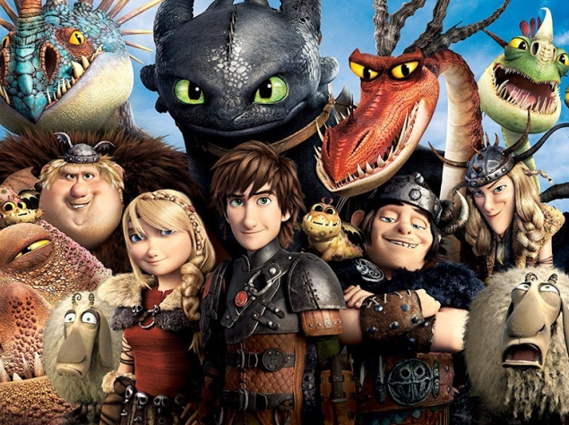

About Dragon Riders
When you think about animated movies, it's Disney and Pixar that hog all the attention, but DreamWorks has been doing a great job as well with films like Shrek, Kung Fu Panda, and How to Train Your Dragon. DreamWorks has also been a lot more aggressive when it comes to putting out sequels and spin-offs - and sometimes this goes overboard (witness Shrek, Madagascar) - but it isn't always a bad thing either. Kung Fu Panda 2 was an excellent, enjoyable film that actually improved upon the original in some ways, and we called How To Train Your Dragon 2 one of the best animated films in 2014. But the other thing that DreamWorks has been doing is covering the gaps in between movies with TV shows, and the latest one to be released is How to Train Your Dragon: Race to the Edge. All 13 episodes of the show released a few days back on Netflix and if you're in India, then you won't be able to watch them yet, but if you're reading this from the US, or you're one of the many people who uses Netflix over a VPN or via services like UnoDNS, then we'd suggest you start watching this show.
There's also a good chance that the show will eventually air on an Indian channel - other shows like House of Cards and Orange is the New Black have made the jump, for example - and so, if you're at all interested in How to Train Your Dragon, or fun animated shows in general, then you should check this out.